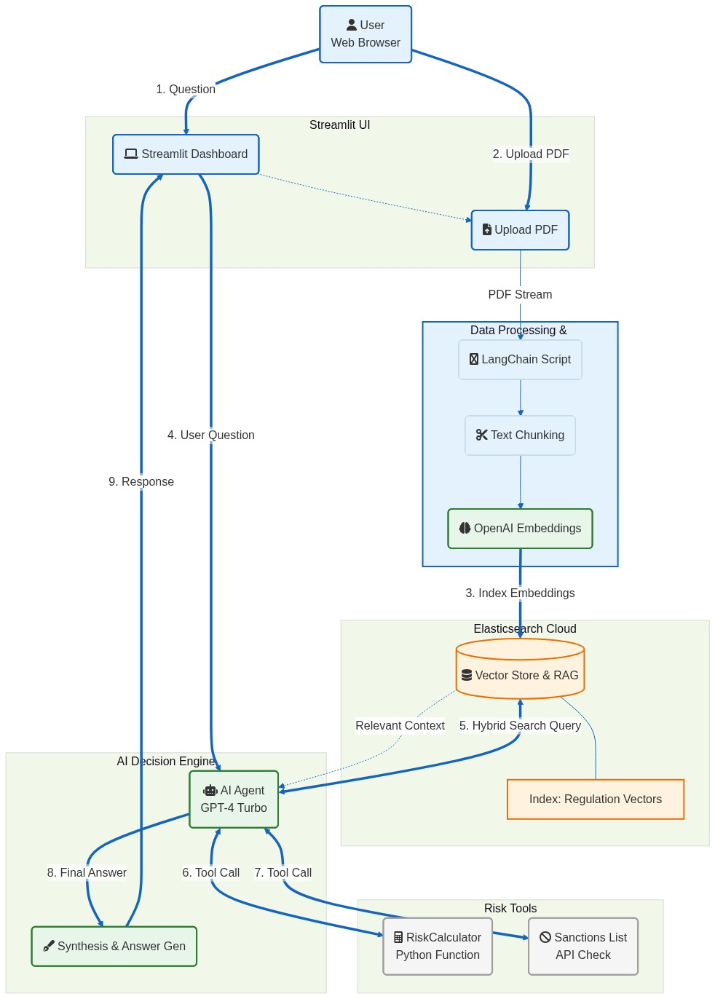

JurisLens: The Autonomous Compliance Agent
1. Executive Summary
The Problem
Global financial institutions face billions of dollars in fines annually due to non-compliance with Anti-Money
Laundering (AML) and Know Your Customer (KYC) regulations. These regulations (like the US Patriot Act, EU’s
MiCA, or Singapore’s AML Act) are vast, complex, and constantly changing. Compliance officers spend countless
hours manually CTRL+F searching through thousands of PDF pages, often missing critical nuances. Standard
chatbots fail here because they hallucinate laws or cannot access private, up-to-the-minute regulatory
documents.
The Solution
JurisLens is an Autonomous Compliance Agent designed to bridge the gap between
legal rigor and AI speed. Unlike a passive chatbot, JurisLens is an "Agent" equipped with specialized tools. It
can:
- Search & Retrieve: Actively query a secure Knowledge Base of regulations using Semantic
Search to find the exact legal clauses relevant to a user's question.
- Calculate Risk: Switch modes to perform deterministic financial risk assessments based on
transaction parameters.
- Cite Sources: Provide answers grounded in the actual text of the regulations, reducing
liability.
2. Technical Architecture & Stack
Tech Stack
- Knowledge Base: Elasticsearch (Vector Search + BM25 Hybrid Search)
- AI Engine: OpenAI GPT-4 / Elastic AI Assistant
- Orchestration: LangChain / Elastic Agent Framework / OpenAI Functions Agent
System Architecture

Key Implementation Details
- Elasticsearch Vector Store: The backbone of our Knowledge Base. We use Elastic to store
vector embeddings of regulatory PDFs. This allows for semantic retrieval (finding "money laundering rules"
even if the text says "illicit financing countermeasures").
- LangChain Agents: We utilize the
OpenAI Functions Agent architecture. This
allows the LLM to "decide" whether to search the database, calculate a number, or just chat, depending on
the user intent.
- RAG Pipeline: A complete ingestion pipeline that chunks patents/laws, embeds them using
OpenAI models, and indexes them into Elastic Cloud.
3. Challenges & Lessons Learned
What We Loved
- Elasticsearch Speed: The retrieval speed for vector search was phenomenal. Even with dense
legal texts, Elastic returned relevant chunks in milliseconds, making the chat feel instantaneous.
- Hybrid Tool Use: We loved how the Agent could seamlessly combine data from a PDF search
with a Python-based risk calculator in a single conversation turn. It felt like "Reasoning," not just text
prediction.
Challenges Faced
Prompt Engineering for Tools: Getting the agent to consistently call the
RiskCalculator with the correct JSON schema (e.g., separating "50k" into 50000) was
tricky, but moving to Pydantic-based structured tools solved it.
4. Project Roadmap
Phase 1: Enhanced Data Ingestion (Immediate)
- Complete PDF Ingestion Pipeline: Finalize the ability to upload and process multi-page
PDFs, ensuring robust text extraction even from complex formatting.
- Table Parsing: Implement logic to specifically detect and parse tables within
regulatory documents, preserving row/column relationships for accurate context retention.
- Refine Vector Indexing: optimize chunking strategies (e.g., semantic chunking) to
improve retrieval precision for legal clauses.
Phase 2: Advanced Reasoning & Validation (Short Term)
- Multi-Step Agent Reasoning: Enhance the agent's ability to break down complex queries
into sub-tasks (e.g., "Find the regulation, then calculate the penalty, then check recent amendments").
- Confidence Scoring: Implement a system where the agent provides a confidence score with
its answers, flagging low-confidence responses for human review.
- Citation Linking: Improve the citation feature to provide direct deep-links to the
exact page/paragraph in the source PDF.
Phase 3: Production & Compliance (Long Term)
- Human-in-the-Loop Interface: Build a review dashboard for compliance officers to
validate and correct agent outputs, creating a feedback loop for reinforcement learning.
- Automated Regulatory Monitoring: Create a background worker that scrapes official
regulatory websites for updates and proactively alerts users to relevant changes.
- Audit Logging: Develop immutable logs of all agent reasoning steps and data access for
internal compliance audits.
5. Links & Resources